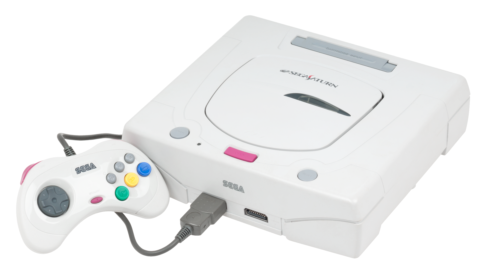
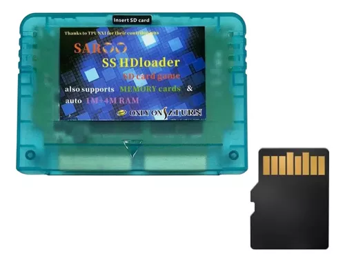

Overview
The SEGA Saturn
The SEGA Saturn was a 32-bit home console produced by SEGA in 1994 as a competetor for the Sony Playstation. While it's often known for its commercial failure in America, it was quite successful in Japan, planting itself firmly as the second most popular console in the country at the time. It also had a larger install base in Europe, largely due to the popularity of the Master System and Mega Drive there.
Its commercial failure in America is probably the biggest contributor to its modern day reputation. It's often treated as a console with no library and not much reason to be played or collected now. While some of its novelty has worn off overtime, mainly due to emulation providing easy access to home ports of arcade titles, the console's library is over twice as large as the Nintendo 64's and has a large number of extremely good titles, ports, and exclusives.

The Saroo
The Saroo is a flashcart for the SEGA Saturn, started in 2013, the project began to grow as it went into Beta. However, due to limited success booting into games, the project went open-source and was put on hold until semi-recently, when Chinese manufacturers started producing the Saroo for cheap and using custom firmwares that fixed compatability. This motivated the creator to revive the Saroo project and update the firmware themselves. The Saroo is the best budget option for running games without the Disk Drive, featuring good compatability and a below 100$ price tag.
The video linked here is a good summary.
https://youtu.be/8VIE47nBa7A?si=XJOO-sEaDpX7-elb
